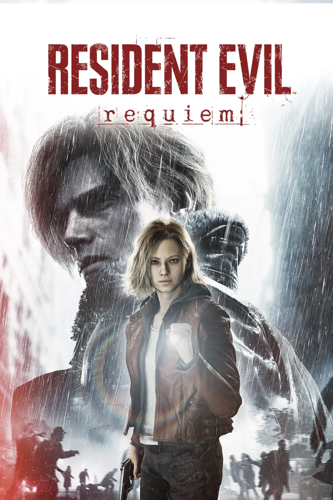

Resident Evil Requiem
La pesadilla vuelve a Raccoon City.
Grace Ashcroft, analista del FBI, investiga una serie de muertes misteriosas en un hotel y termina destapando la verdad oculta tras el brote de Raccoon City. Leon S. Kennedy también regresa como personaje jugable.
Grace Ashcroft
Analista del FBI e hija de Alyssa Ashcroft, de Resident Evil Outbreak. Su parte apunta al terror de Resident Evil 2 y 7.
Leon S. Kennedy
El agente veterano vuelve con acción al estilo de Resident Evil 4. Y sí, otra vez con motosierra.
Información basada en lo publicado por Capcom y medios especializados. Imagen © Capcom.
